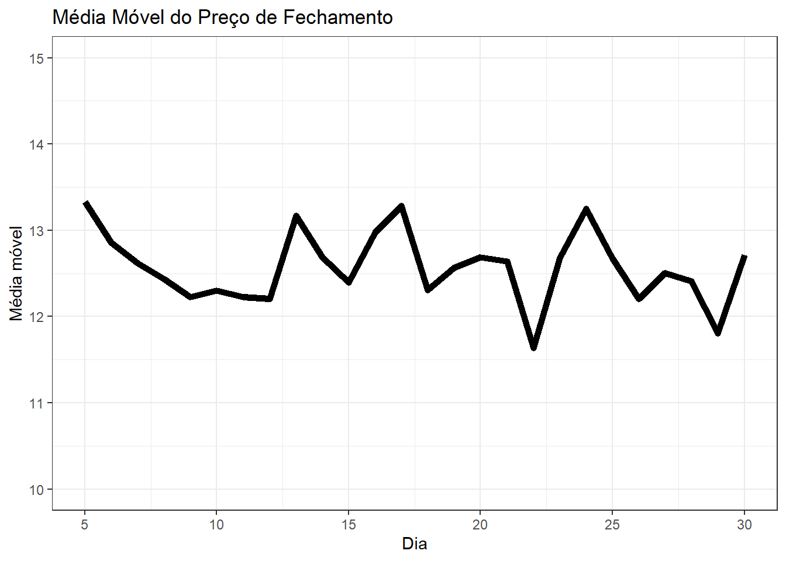
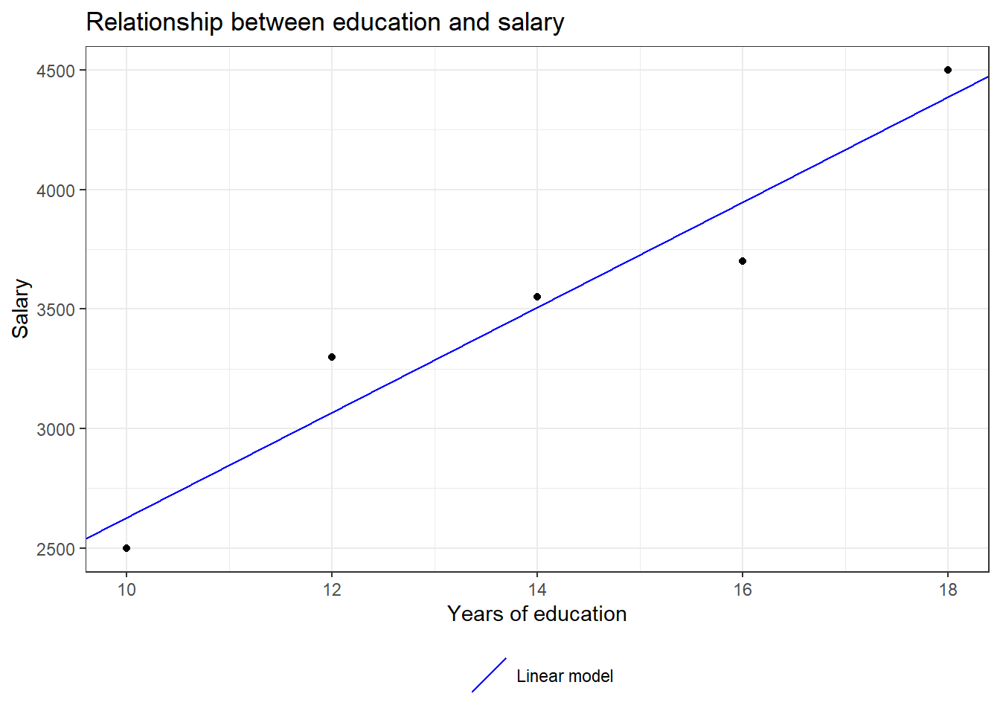

if (condition) {
# Code block to execute if the condition is true
} else {
# Code block to execute if the condition is false
}2 Execution Flows
2.1 Conditional Structures
Code flow in R can be controlled using conditional structures, such as if, else if, and else. These structures allow you to execute different code blocks based on specific conditions.
2.1.1 if and else
The if structure is a control flow structure that executes a block of code if a specified condition is true. If the condition is false, the code block within the if will not be executed. On the other hand, else is used to execute a block of code when the if condition is false.
The basic syntax of if and else in R is as follows:
Here is a practical example of how to use if and else to check if a randomly chosen integer between -10 and 10 is positive or negative:
# Setting the seed to ensure reproducibility
set.seed(42)
# Generating a random number between -10 and 10
number <- sample(-10:10, 1)
if (number > 0) {
print("The number is positive.")
} else {
print("The number is negative or zero.")
}[1] "The number is positive."In this example, sample(-10:10, 1) generates a random number between -10 and 10, and the value is assigned to the number variable. Additionally, set.seed(42) sets the seed to 42. This ensures that when generating the random number with sample(), the same number is chosen every time the code is executed. Then, we check if the number is positive or not and print the corresponding message.
2.1.2 else if
In addition to if and else, we can also use else if to add more conditions to the conditional structure. The else if allows checking multiple conditions in sequence. If the if condition is false, it checks the next else if condition. If all the if and else if conditions are false, the code block within the else is executed.
Here is the syntax of else if:
if (condition1) {
# Code block to execute if condition1 is true
} else if (condition2) {
# Code block to execute if condition2 is true
} else {
# Code block to execute if none of the previous conditions are true
}Here is a practical example of how to use if, else if, and else to evaluate a company’s performance based on its annual revenue:
# Determining the company's classification based on annual revenue
annual_revenue <- 1500000
if (annual_revenue >= 2000000) {
print("Large Company")
} else if (annual_revenue >= 1000000) {
print("Medium Company")
} else if (annual_revenue >= 500000) {
print("Small Company")
} else {
print("Microenterprise")
}[1] "Medium Company"In this example, the company is classified based on its annual revenue. If the revenue is equal to or greater than 2,000,000, the company will be classified as a “Large Company”. If it is between 1,000,000 and 1,999,999, it will be classified as a “Medium Company”. If it is between 500,000 and 999,999, it will be classified as a “Small Company”. Otherwise, it will be considered a “Microenterprise”.
2.2 Loop Structures
Loop structures, also known as repetition structures, are used to execute a block of code repeatedly while a specific condition is true or to iterate over a sequence of elements. This is useful when you need to perform a task multiple times or want to loop through a collection of data.
2.2.1 for
One of the most common repetition structures is the for loop. The for loop is used to iterate over a sequence of values, such as a numeric sequence of integers or the elements of a vector.
There are two ways to use the for loop.
- Using
forto iterate over indices:
# Example of a for loop to iterate over indices
for (i in 1:5) {
print(i)
}[1] 1
[1] 2
[1] 3
[1] 4
[1] 5In this example, the for loop iterates over the values from 1 to 5. In the first iteration, i is equal to 1; in the second iteration, i is equal to 2; and so on, until i is equal to 5.
- Using
forto iterate over elements:
# Example of a for loop to iterate over elements of a vector
customers <- c("John", "Mary", "Joseph", "Anna")
for (name in customers) {
print(name)
}[1] "John"
[1] "Mary"
[1] "Joseph"
[1] "Anna"In the example above, the for loop iterates over the elements of the customers vector. In the first iteration, name is equal to “John”; in the second iteration, name is equal to “Mary”; and so on, until all elements of the vector are processed.
In both examples, the code block inside the for loop is executed repeatedly for each value of i (in the first example) or name (in the second example) until the sequence is completely traversed.
In the example below, let’s simulate economic data for 10 fictitious countries and calculate the per capita GDP of each country.
set.seed(42)
gdp_countries <- runif(10, min = 25000000, max = 40000000)
population_countries <- runif(10, min = 1000000, max = 15000000)
gdp_per_capita <- numeric(length = 10)
# For loop to calculate per capita GDP for each country
for (i in 1:10) {
# Calculating per capita GDP
gdp_per_capita[i] <- gdp_countries[i] / population_countries[i]
}
print(round(gdp_per_capita, 3)) [1] 5.227 3.529 2.080 8.185 4.634 2.315 2.453 10.216 4.556 4.022
Click to see an extra example
Imagine we have a time series representing the daily closing price of a stock over a period of 30 days. We want to calculate the 5-day moving average of this price, that is, for each day, we want to calculate the average of the closing prices of the five previous days, including the current day.
First, let’s simulate the data for the daily closing price of the stock:
set.seed(42)
stock_price <- runif(30, min = 9, max = 15)Now, let’s calculate the 5-day moving average using a for loop:
moving_average <- numeric(length = 26) # Vector to store the moving average
for (i in 5:30) {
moving_average[i - 4] <- mean(stock_price[(i - 4):i])
}In this for loop, we start from the fifth day, as we need at least five days to calculate the 5-day moving average. For each day from the fifth to the thirtieth day, we calculate the average of the closing prices of the five previous days, including the current day, and store this value in the moving_average vector.
Now we can print the calculated moving average:
print(moving_average) [1] 13.33226 12.85740 12.61682 12.43505 12.22691 12.30289 12.22926 12.20829
[9] 13.16830 12.68642 12.39510 12.97382 13.28476 12.30414 12.56762 12.68527
[17] 12.64209 11.63467 12.68036 13.24636 12.67289 12.20510 12.50690 12.40711
[25] 11.80747 12.71175This example demonstrates how to use a for loop in conjunction with vectors to calculate the moving average of a time series. The chart below shows the moving average over the days.

Note
You will learn how to build charts like this in Chapter 4.
2.2.2 while
The while structure is used to repeat a block of code as long as a specified condition is true. Here is the general structure of a while loop:
while (condition) {
# Code to be repeated while the condition is true
}The condition is a logical expression that is evaluated before each execution of the code block inside the loop. If the condition is true, the code block is executed; if false, the loop terminates, and control passes to the next line of code after the loop.
In the example below, we define a vector called actions, which contains a list of possible activities a person might perform during the day. One of the possible actions will be chosen randomly.
actions <- c("Learn to code in R",
"Learn to code in Python",
"Make coffee",
"Rest")
set.seed(42)
action <- sample(actions, 1)
print(action)[1] "Learn to code in R"In the following code snippet, we use the while structure to continue randomly selecting an activity from the actions vector until the selected activity is “Rest”. The loop starts by checking if the variable action is different from “Rest”. If this condition is true, a new activity is randomly selected from the actions vector using the sample() function with size = 1. The selected activity is then printed to the screen using the print() function. This process repeats until the selected activity is “Rest”, at which point the loop ends.
set.seed(420)
while (action != "Rest") {
action <- sample(actions, 1)
print(action)
}[1] "Learn to code in R"
[1] "Learn to code in R"
[1] "Learn to code in Python"
[1] "Learn to code in Python"
[1] "Rest"
Click to see an additional example
Let’s consider an example where we want to simulate population growth over time, where the number of periods required to reach a certain limit is unknown. In this case, we use a while loop to simulate population growth until the population reaches a set threshold.
set.seed(42) # Set seed for reproducibility
# Initial population
population <- 1000
# Annual population growth rate (in decimal)
growth_rate <- 0.02
# Desired population limit
population_limit <- 2000
# Initialize year counter
years <- 0
# Simulating population growth until the limit is reached
while (population < population_limit) {
# Calculate new individuals this year
new_individuals <- population * growth_rate
# Increment population with new individuals
population <- population + new_individuals
# Increment year counter
years <- years + 1
}
# Print the number of years required to reach the population limit
print(paste("It took", years, "years to reach a population of", population))[1] "It took 36 years to reach a population of 2039.8873437157"
Note
You can calculate the exact number of years needed to reach the population limit directly. Using algebra, the formula is as follows:
\[\text{years} = \frac{\log\left(\frac{\text{population\_limit}}{\text{initial\_population}}\right)}{\log(1 + \text{growth\_rate})}.\]
2.3 Functions
A function in R is a block of code that performs a specific task and can be reused multiple times. The syntax for defining a function in R follows this pattern:
function_name <- function(parameters) {
# Function body
# Code that performs the desired task
# May include mathematical operations, data manipulation, etc.
return(result) # Returns the desired result
}Parameters are variables that a function takes as input to perform its operations. They are specified within parentheses when defining the function. Inside the function body, these parameters can be used to perform calculations or operations.
The example below defines a function to perform a simple linear regression. The linear_regression function takes two parameters: x and y, which represent the input data for the regression. Inside the function, a linear regression model is created using the lm() function in R, with y as a function of x. The model is then returned as the function result.
# Function to perform simple linear regression
linear_regression <- function(x, y) {
model <- lm(y ~ x) # Creating the linear regression model
return(model) # Returning the model
}
# Example data: salary (y) as a function of years of education (x)
education_years <- c(10, 12, 14, 16, 18)
salary <- c(2500, 3300, 3550, 3700, 4500)
# Calling the linear regression function
regression_model <- linear_regression(education_years, salary)Display the summary of the trained model:
# Display regression results
summary(regression_model)
Call:
lm(formula = y ~ x)
Residuals:
1 2 3 4 5
-130 230 40 -250 110
Coefficients:
Estimate Std. Error t value Pr(>|t|)
(Intercept) 430.00 498.20 0.863 0.45156
x 220.00 34.88 6.307 0.00805 **
---
Signif. codes: 0 '***' 0.001 '**' 0.01 '*' 0.05 '.' 0.1 ' ' 1
Residual standard error: 220.6 on 3 degrees of freedom
Multiple R-squared: 0.9299, Adjusted R-squared: 0.9065
F-statistic: 39.78 on 1 and 3 DF, p-value: 0.008054Below is a scatter plot showing the relationship between years of education and salary. The blue line represents the linear regression model trained on the data.

Note
You will learn how to build charts like this in Chapter 4.
2.4 Packages
Packages in R are collections of functions, datasets, and documentation that extend the core capabilities of the R language. They are essential for performing a wide variety of tasks.
R packages are available on CRAN (Comprehensive R Archive Network), a centralized repository that hosts a vast collection of packages. To access CRAN packages, use the install.packages() function. For example:
install.packages("package_name")After installation, load the package into your R session using the library() function:
library(package_name)This makes the package’s functions and datasets available for use in your current session.
2.5 Exercises
1. In this exercise, simulate a coin toss and store the results as a factor with levels “heads” and “tails”. Follow these steps:
a) Use the command below to generate random samples following a binomial distribution to simulate 100 coin tosses:
set.seed(42)
tosses <- rbinom(100, 1, 0.5)b) Assume 0 represents “heads” and 1 represents “tails”. Create a variable to store the tosses as a factor with levels “heads” and “tails”.
c) Count how many times each result occurred in this experiment.
d) Use a loop to iterate backward through the vector and find the last “heads” result.
2. Working with package datasets.
a) Install the nycflights13 package:
install.packages("nycflights13")b) Load the package into your environment:
library(nycflights13)c) Use the commands below to explore the contents of the flights and airports data frames:
?flights
?airportsd) Filter the flights that occurred on 12/25/2013 and store them in the variable christmas.
e) How many flights departed from New York on 12/25/2013?
f) Get a summary of the dep_delay column. Are there missing values? If yes, remove them.
g) Find the name of the destination airport of the flight with the longest departure delay on 12/25/2013. Hint: Merge the flights and airports datasets.